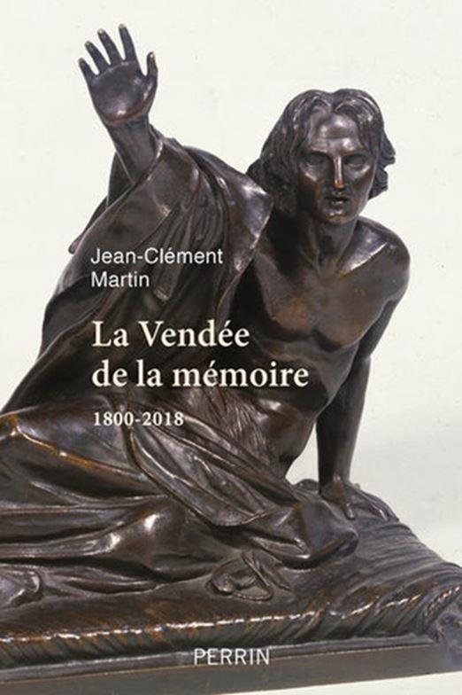
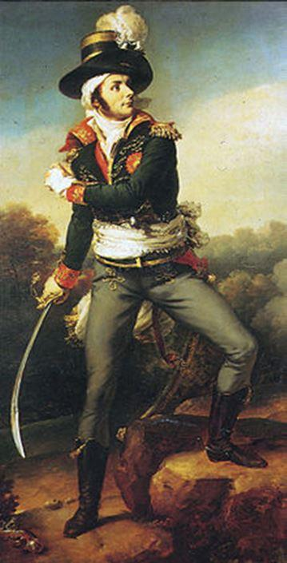
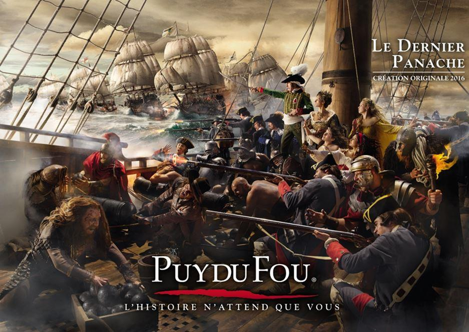
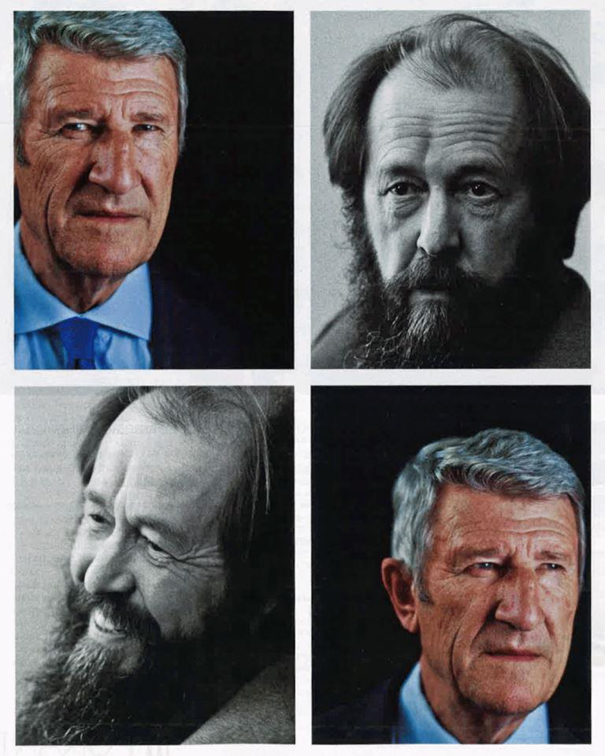

Jean-Clément Martin, professeur émérite de l’université Paris I Panthéon-Sorbonne, et ancien directeur de l’Institut d’histoire de la Révolutionnaire française, a publié de plusieurs livres sur cette période : notamment La Guerre de Vendée, Robespierre, la Terreur.
Dans sa dernière production, La Vendée de la mémoire 1800-2018, il étudie cette région qui, de Nantes à Fontenay-le-Comte et des Sables d’Olonne à Saumur a été marquée par « les combats et les massacres ».
Plus de deux siècles après la fin des guerres de Vendée, par lesquelles se sont opposées à la République naissante les Armées catholiques et royales, l’auteur constate dès la première ligne que « la Vendée et sa guerre demeurent toujours dans nos mémoires et dans notre actualité ». Il développe sa pensée initiale en expliquant que « l’exceptionnel succès du Puy du Fou et les polémiques qui s’y rattachent, la vivacité des débats sur la signification même de l’événement et les enjeux idéologiques qui lui sont liés, continuent d’identifier une région particulière, née du conflit avec la Révolution française ».
En partant de ce postulat, Martin estime que la région Vendée « aux contours indécis, qui englobe des parties de Loire-Atlantique, du Maine-et-Loire, des Deux-Sèvres et bien entendu du département de la Vendée, a été, pendant ces deux siècles, l’objet d’une attention mémorielle très forte, sans comparaison avec ce qui advenait pour d’autres régions ». Il appuie sa démonstration de la façon suivante : « Preuve en est donnée par les innombrables croix, monuments et plaques qui quadrillent finement le territoire. Ces signes rappellent les lieux des combats et des massacres, les refuges et les manoirs des généraux, les cimetières et les chapelles commémoratives. » Martin précise que ce phénomène est apparu « dès 1794 et que la dynamique de la création n’a pas faibli par la suite, demeurant, aujourd’hui encore, très active ». En effet, toute personne visitant cette belle région de France ne peut que remarquer tous les calvaires bordant les routes, champs et chemins creux.
En réalité, l’auteur observe que « cette longue mémoire n’est pas seulement un objet d’érudition. D’emblée, au XVIIIe siècle déjà, elle servait à continuer le combat. Sa mission était d’entretenir le souvenir des combattants et des martyrs et de condamner les opposants. » Il insiste sur un fait objectif : « Sa réussite est exemplaire, puisque deux traditions opposées n’ont pas cessé de s’affronter continuellement : Blancs contre Bleus, catholiques et royalistes, contre républicains et laïcs. » En conséquence, ce combat pour la défense de la mémoire des grands ancêtres provoque des répercussions qui dépassent largement le champ politique, intellectuel et historique : « Une émulation en a résulté dans tous les domaines de la vie, à commencer par le développement de l’économie nécessaire pour garder sur place les descendants des contre-révolutionnaires, grâce au progrès agricole et à l’installation de fabriques et d’usines. »
Tout au long des pages, Martin raconte cette mémoire qui est devenue en quelque sorte, au fil du temps, la sœur jumelle de l’histoire contemporaine. Il explique avec pédagogie et nuance comment tout une société a vivifié son passé dans ses pages glorieuses comme dans ses détestées horreurs. Toutefois, et contrairement à ce que pourrait laisser croire une vision historique tronquée, les rapports ne furent pas un long fleuve tranquille entre la Royauté et les combattants arborant la devise Dieu et le Roi. Ainsi, l’auteur écrit avec raison : « Vaincus et vainqueurs, les Vendéens sont comme les chouans, muselés et fêtés. Dans la France de la royauté restaurée, la pugnacité vendéenne n’est plus un exemple à suivre, mais une bizarrerie politique. » Certains royalistes disent même que les Bourbons ne montrèrent pas une très grande reconnaissance à l’endroit de ceux qui avaient pris les armes pour défendre la Dynastie.
Dans cette étude remarquable, Martin explicite une question fondamentale : « Comment peut-on rappeler une guerre dont les héros ont été vaincus ? » Pour répondre à cette interrogation légitime, il faut comprendre l’état d’esprit des survivants des guerres de Vendée et des nombreux mémorialistes qui les ont contées, peintes ou dessinées. Pour eux, il semble que « la Vendée n’est pas témoignage du vieux monde mais point de départ contre les fausses valeurs de la République, elle trouve sa place dans les luttes qui opposent les deux France ».
Il convient de convoquer une idée essentielle : « Les Vendéens ont opposé leurs croyances à l’impiété, leur magnanimité aux massacres, leur respect des biens aux incendies. Leur mort a été le prix à payer contre la corruption du pays provoquée par les crimes révolutionnaires. » Pour d’autres auteurs, il faut envisager que « la mort des Vendéens les a transformés en martyrs de la foi, en Maccabées… »
Pour autant, nous nous rappelons le grand écrivain Antoine de Rivarol qui dans ses brillants écrits, n’avait pas épargné les émigrés réfugiés à Koblenz à cause de leur suffisance et de leur incapacité à agir autrement que par la parole. De fait, nous ne sommes guère étonnés de lire le propos suivant sous la plume de Martin : « Le paradoxe est grand, quand le duc de Fitz-James affirme qu’il aurait été fier de suivre au combat et même dans la mort, les héros de la Vendée, alors que les émigrés n’ont manifesté jadis que peu d’empressement à participer à la guerre. »
Dans le même ordre d’idée, nous ne pouvons passer sous silence l’attitude étonnamment passive de Charles d’Artois, le futur Charles X, qui refusa de rejoindre le continent alors que Charette avait réuni 15 000 hommes. En apprenant la décision plus que surprenante du Prince, Charette déclara avec sincérité à l’envoyé de celui-ci : « Allez dire à vos chefs que vous m'avez apporté mon arrêt de mort. Aujourd'hui, je commande 15 000 hommes. demain, il m'en restera 1500. En manquant à leur parole, vos chefs m'ôtent tout moyen de les servir. Je n'ai plus qu'à fuir ou à chercher une mort glorieuse. Mon choix est fait : je périrai les armes à la main. »
En définitive et manière plus générale, Martin note « que dans l’Ouest, les guerres, qui attestent le refus des changements, se conjuguent avec l’arriération dont semble faire preuve les populations, qui, pour une part, emploient toujours le vieux langage des Celtes. Celtomanie, histoire, romantisme, régionalisme et politique peuvent s’emparer de la Vendée. » L’auteur n’oublie jamais de rappeler et d’analyser l’arrière-plan culturel pour expliciter ses différentes analyses consacrées à cette « région de la mémoire. »
Ainsi, en parlant de combat culturel, Martin n’omet pas de mentionner le Puy du Fou et notamment l’un des derniers grands spectacles créés et intitulé Le Dernier Panache qui évoque la figure de Charette. Même si l’auteur écrit qu’il « est sans doute légitime, tout au moins ordinaire, qu’un spectacle prenne des libertés avec la vérité des faits », Martin exprime néanmoins la critique suivante : « Les liens avec l’Angleterre et la paix signée à la Jaunaye en février 1795 ne sont pas évoqués pour éviter d’affaiblir l’image du général. »
Au cours d’un spectacle de trente-deux minutes, il s’avère en réalité fondamentalement impossible d’évoquer tous les éléments biographiques importants de la vie de Charette. Le scénariste – quel qu’il soit – est obligé d’opérer des choix pour mettre en avant tel aspect ou tel acte de la vie de son héros. A nos yeux, signer la paix ne rime pas forcément avec lâcheté, couardise, ni faiblesse. Cela démontre au contraire que Charette n’incarnait pas le moins du monde un mercenaire, un frondeur, ni même un aventurier va-t-en-guerre, ce qui nous paraît des plus valorisant. De plus, la paix signée au manoir de La Jaunaye s’explique aisément et positivement par le contexte. Nous n’en dirons pas plus car cela dépasse le cadre du présent sujet.
Si des journalistes ou des historiens trouvent Le Dernier Panache trop royaliste ou trop catholique - de leur point de vue éloigné de la véritable histoire - nous leur disons que nous connaissons des personnes pensant le contraire. Effectivement, elles jugent que ce spectacle respecte la réalité historique, même si elles lui reprochent de proposer une vision, certes objective, mais trop généraliste. Par conséquent, elles déplorent que le combat de Charette et des siens ne soit pas mis plus en avant. Poursuivant leurs réflexions, elles expriment l’idée que le mot « cause » est prononcé, sans dire précisément laquelle les protagonistes défendent vraiment. Elles pensent aussi qu’après avoir vu ce spectacle, le spectateur lambda pourrait être tenté de croire que les Vendéens se seraient battus pour la Liberté. Comme quoi, chaque camp peut trouver ce qu’il veut en étudiant ou en critiquant la même œuvre…
A titre personnel, et quelles qu’aient été les motivations de Philippe de Villiers, scénariste du Dernier Panache, nous considérons qu’il convient de prendre et de considérer ce spectacle pour ce qu’il est, c’est-à-dire une animation culturelle très réussie, notamment sur le plan technique et visuel. Voir dans Le Dernier Panache une entreprise politique ou idéologique réussie nous semble être une grossière erreur car, sur les millions de visiteurs ayant profité du Puy du Fou ces trois dernières décennies, combien sont-ils à être devenus catholiques et royalistes suite à leur visite ? Nous sommes intimement convaincus, que ce chiffre se rapproche des nombres epsilonesques…
Pour la petite histoire, l’avant-dernière fois que j’ai assisté au Dernier Panache, je me souviens d’un commentaire particulièrement savoureux émis par une des personnes assises devant moi : « Mais c’est qui Soljenitsyne ? » Les Français et les étrangers qui passent leurs journées au Puy du Fou désirent le plus souvent se divertir en famille et prendre du bon temps. Ils ne viennent pas dans ce parc à thème pour mener un combat politique ou se former sur le plan historique et intellectuel.
Cependant, il convient toujours de s’intéresser à la portée d’un projet culturel de ce genre, rencontrant une réussite non démentie depuis plusieurs années sur le plan national et international, portant sur la mémoire et l’histoire. De même, n’écartons pas toutes les actions et les entreprises engrangeant des résultats positifs qui visent à entretenir la mémoire de la Vendée. Martin écrit à juste titre : « Il reste à savoir si les succès considérables de ces opérations, qui sont à relier aux reconnaissances internationales exceptionnelles accordées au spectacle du Puy du Fou, rendent compte de l’état du souvenir des guerres de Vendée, aujourd’hui, à la fin 2018, dans la région ? »
À lire l’auteur, une autre interrogation mérite donc d’être soulevée : le Puy du Fou tourne-t-il le dos à son passé et à la raison fondatrice de sa création ? Un début de réponse peut éventuellement être esquissée en énumérant les dernières créations puyfolaises : Les Chevaliers de la Table Ronde (2013) ; Les Amoureux de Verdun (2015) ; Le Dernier Panache (2016) ; Le Mystère de la Pérouse (2018) ; Le Premier Royaume (2019), consacré quant à lui à Clovis. L’avenir dira s’il s’agit d’un reniement pour des raisons commerciales et politiques ou tout simplement de l’évolution classique d’un parc reposant sur des thématiques historiques.
En guise de conclusion, Martin estime « que la mémoire de la Vendée est une autre histoire de France. Moteur fou de la Révolution, région-mémoire aux XIXe et XXe siècle, la Vendée reste l’un des pans mal intégrés d’une histoire de France, qui serait à écrire, sans être obsédé par la recherche de légitimation, et en reconnaissant les contradictions de notre itinéraire national. Ce serait bien la moindre des choses que l’histoire de la Vendée profite à la mémoire de la France. » Malheureusement, les passions, les raccourcis historiques, les enjeux politiques empêchent de regarder cette période historique avec raison et sérénité.
Le sous-titre indique que l’étude se clôt en 2018 sur « un constat et un pari », selon les propres mots de l’auteur. Martin considère en effet « qu’un cycle, certainement, se referme en ce moment, de nouvelles problématiques s’ouvrent, projetant la Vendée désormais vers 2040, avec des activités inédites et une autre lecture de sa guerre. Avant ces temps nouveaux, il convient de se rappeler ce qui est advenu. » Cet ouvrage intéressant, fort instructif et très bien écrit, suit l’évolution contrastée des souvenirs et des mémoires pour mettre en lumière les paradoxes de cette page méconnue de notre belle et longue histoire nationale…
Partager cette page